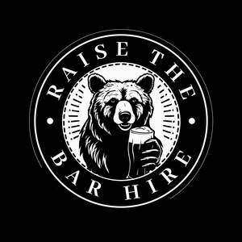

Trade Mark Journal No.2026/010 6 March 2026
UK00004326472 19 January 2026 (6,7,16,20,24,32,33,35,39,40,41,43)

- Class 6
- Metal taps for beer kegs; Beer vent taps of metal; Cans of metal for alcoholic beverages.
- Class 7
- Beer pumps; Pumps for beer; Beer engines; Bottle capping machines for food and beverages.
- Class 16
- Mats of paper for beer glasses; Paper mats for beer glasses; Beer mats of paper.
- Class 20
- Mobile bar units [furniture]; Mobile stools [furniture].
- Class 24
- Mats of textile for beer glasses; Bar cloths.
- Class 32
- Beer; Malt beer; Non-alcoholic beer; Bock beer; Saison beer; Beers; Low-alcohol beer; Craft beer; Barley wine [Beer]; Barley wine [beer]; Black beer [toasted-malt beer]; Beer and brewery products; Ginger beer; Flavored beer; Wheat beer; Coffee-flavored beer; Beer wort; Frozen hops for brewing beer; Non-alcoholic beers; Root beer; Root beers, non-alcoholic beverages; Dried hops for brewing beer; Non-alcoholic beer flavored beverages; Craft beers; Lager; Alcohol-free beers; Hop pellets for brewing beer; Imitation beer; De-alcoholized beer; Flavored beers; Black beer; Root beers; Flavoured beers; De-alcoholised beer; Low alcohol beer; Bitter [Beers]; Beer-based beverages; Non-alcoholic malt drinks; Ale; Non-alcoholic malt beverages; Hops (Extracts of -) for making beer; Extracts of hops for making beer; Non-alcoholic beer-based cocktails; Hop extracts for manufacturing beer; Coffee-flavored ale; Beer-based cocktails; Lagers; Kvass [non-alcoholic beverage]; Sarsaparilla [non-alcoholic beverage]; Non-alcoholic wine; Kvass [non-alcoholic beverages]; Carbonated non-alcoholic drinks; Cider, non-alcoholic; Cola drinks; Non-alcoholic beverages with tea flavor; Non-alcoholic beverages flavored with coffee; Non-alcoholic drinks; Ginger ale; Malt syrup for beverages; Non-alcoholic beverages flavoured with coffee; Non-alcoholic soda beverages flavoured with tea; Non-alcoholic malt free beverages [other than for medical use]; Non-alcoholic carbonated beverages; Ales; Non-alcoholic flavored carbonated beverages; Alcohol free wine; Non-alcoholic wines; Non-alcoholic fruit drinks; Alcohol free cider; Non-alcoholic beverages; Beverages (Non-alcoholic -); Non-alcoholic beverages flavored with tea; Non-alcoholic fruit vinegar beverages.
- Class 33
- Flavored brewed alcoholic malt beverages, except beers; Flavoured brewed alcoholic malt beverages, except beers; Alcoholic beverages, except beer; Alcoholic beverages (except beer); Beverages (Alcoholic -), except beer; Alcoholic carbonated beverages, except beer; Alcoholic beverages except beers; Alcoholic beverages (except beers); Alcoholic beverages [except beers]; Wine coolers [drinks]; Pre-mixed alcoholic beverages, other than beer-based; Whiskey; Whiskey [whisky]; Malt whisky; Rum [alcoholic beverage]; Alcoholic fruit cocktail drinks; Wine-based drinks; Aperitifs with a distilled alcoholic liquor base; Baijiu [Chinese distilled alcoholic beverage]; Wine.
- Class 35
- Promotion of musical concerts; Promotion [advertising] of concerts; Event marketing.
- Class 39
- Truck and trailer rental.
- Class 40
- Brewing of beer; Beer brewing for others.
- Class 41
- Festivals (Organisation of -) for entertainment purposes; Production of music concerts; Organisation of musical concerts; Music concerts; Presentation of musical concerts; Arranging of festivals for entertainment purposes; Wedding celebrations (Organisation of entertainment for -); Organising community cultural events; Live musical concerts; Organisation of concerts; Live music concerts; Organisation of musical events; Music concert services; Presentation of concerts; Organisation of entertainment and cultural events; Music performances; Organising community sporting events; Festivals (Organisation of -) for recreational purposes; Dance events; Entertainment in the nature of live performances by musical bands; Organising of entertainment competitions; Organising of competitions for entertainment; Competitions (Organising of entertainment -); Musical concert services; Hosting of entertainment events; Organizing community sporting and cultural events; Artistic management of music venues; Festivals (Organisation of -) for educational purposes; Reservation services for concert and theatre tickets; Rental of concert halls; Live musical theater performances; Organisation of live musical performances; Organisation of musical competitions; Entertainment in the nature of dinner theater productions; Organising dancing events; Entertainment in the nature of dance performances; Organisation of musical performances; Production of live entertainment events; Entertainment services in the form of concert performances; Arranging of festivals for training purposes; Entertainment in the nature of symphony orchestra performances; Entertainment in the nature of live dance performances; Circus performances; Presentation of live Christmas musical productions; Musical concerts by television; Live music performances; Organization of cosplay entertainment events; Live performances by a musical bands; Musical concerts by radio; Arranging of festivals for educational purposes; Presentation of circus performances; Live performances by a musical band; Presentation of live entertainment events; Entertainment in the nature of theater productions; Circus productions; Production of sporting events; Organising of sports competitions and events; Theatre entertainment; Camp services (Holiday -) [entertainment]; Holiday camp services [entertainment]; Musical performances; Production of music shows; Musical events (Arranging of -); Arranging of musical events; Organisation of entertainment competitions; Production of theatrical performances; Live band performances; Band performances (Live -); Organising of football events; Organising sporting events; Conducting of cultural events; Organising of sporting events; Organising of entertainment; Arranging and conducting of music concerts; Preparation of entertainment programmes for the cinema; Live musical performances; Organisation of sporting events and competitions; Hosting [organising] awards; Production of music; Music production; Conducting of live entertainment events; Cinema entertainment; Presentation of theatrical performances; Conducting of entertainment events; Presentation of live comedy performances; Presentation of live dance performances; Conducting entertainment exhibitions in magic shows.
- Class 43
- Bar and restaurant services; Restaurant and bar services; Bar services; Beer bar services; Snack bar services; Wine bar services; Juice bar services; Bars; Rental of bar equipment; Wine bars; Juice bars; Bar information services; Restaurant services incorporating licensed bar facilities; Cocktail lounge buffets; Serving food and drink in restaurants and bars; Providing food and drink in restaurants and bars; Cocktail lounges; Cocktail lounge services; Lounge services (Cocktail -); Beer garden services; Serving beverages in microbreweries; Serving beverages in brewpubs; Coffee bar services; Rental of food service equipment; Snack-bar services; Hotel catering services; Food service apparatus (Rental of -); Rental of food service apparatus; Bistro services; Rental of catering equipment; Self-service restaurant services; Room hire services; Accommodation services; Restaurant reservation services; Mobile restaurant services; Catering services; Bartending services; Café services; Providing restaurant services; Mobile catering services; Business catering services; Airport lounge services; Reservation services for accommodation; Restaurant information services; Rental of furniture, linens, table settings, and equipment for the provision of food and drink; Rental of glassware; Rental of lighting apparatus; Rental of furniture; Mobile catering; Providing of food and drink via a mobile truck.
Raise The Bar Hire ltd